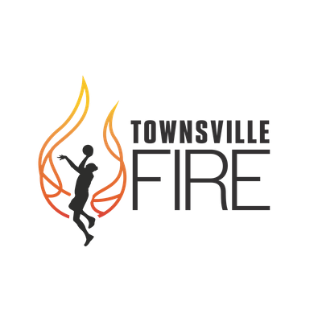

Efficiency by decision time
Points per second-chance possession.
Perth Lynx · centre
| Player | Scoring | Rebounding | Impact | |||||||
|---|---|---|---|---|---|---|---|---|---|---|
| Season | PTS | FG% | 3P% | FT% | OREB | DREB | REB | +/- | WS | Adj WS |
| 2025–26 | 292 | 50.83% | 31.25% | 81.58% | 37 | 91 | 128 | +229 | 2.76 | 2.63 |
| Season | ORtg | DRtg | On +/- / 40 | Off +/- / 40 | On/off / 40 | OWS | DWS | WS / 40 | Adj WS |
|---|---|---|---|---|---|---|---|---|---|
| 2025–26 | 109.55 | 93.24 | 18.32 | 2.13 | 16.19 | 1.47 | 1.29 | 0.22 | 2.63 |
Team profile

| Player | GP | PTS | REB | AST | +/- | On/off / 40 | OWS | DWS | WS |
|---|---|---|---|---|---|---|---|---|---|
| Miela Sowah | 28 | 17.82 | 2.57 | 1.89 | +303 | +8.15 | 3.35 | 0.97 | 4.32 |
| Courtney Woods | 23 | 15.22 | 4.61 | 5.65 | +273 | +12.71 | 2.45 | 1.63 | 4.08 |
| Alicia Froling | 28 | 12.75 | 8.75 | 1.54 | +277 | +6.63 | 4.04 | 1.67 | 5.70 |
Shots within four seconds of the rebound averaged 1.28 points, compared with 1.14 after a longer reset.
Points per second-chance possession.
The four decision windows are visually separated.
| Shot type | 2CP possessions | PTS / 2CP | FG% | Share |
|---|---|---|---|---|
| Cut layup | 284 | 1.55 | 72.10% | 14.20% |
| Putback layup | 913 | 1.37 | 64.80% | 45.60% |
| Catch-and-shoot jumper | 422 | 1.32 | 44.00% | 21.10% |
| Tip shot | 196 | 1.24 | 58.70% | 9.80% |
| Pull-up jumper | 121 | 1.08 | 38.20% | 6.00% |
| Other shot | 66 | 0.98 | 35.10% | 3.30% |